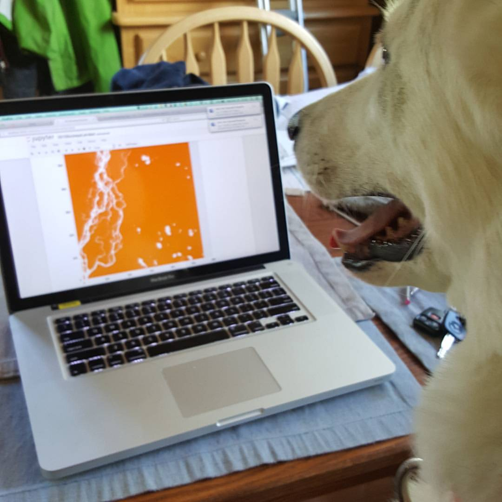
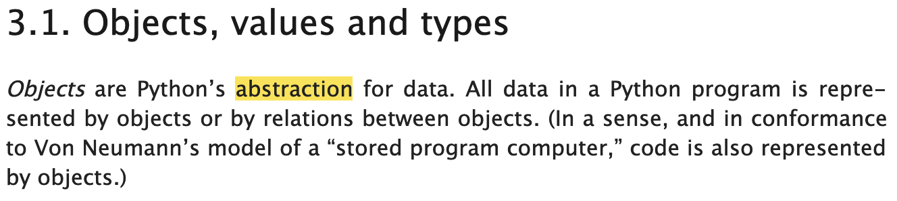
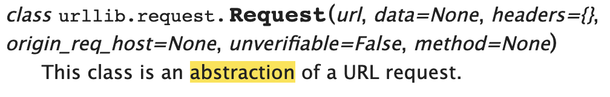
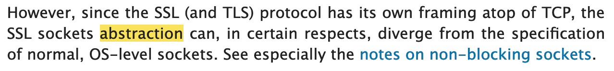
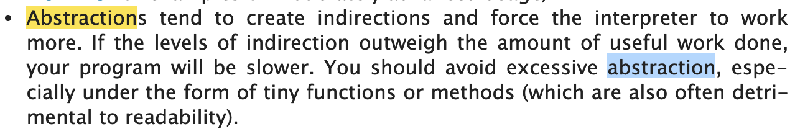

PyCascades 2019
Chris Waigl
I'm an earth scientist.
Dirty secret: Scientists often write mediocre or outright bad code.
Alice Harpole: https://www.software.ac.uk/blog/2017-09-12-how-write-code-scientist
"I've regularly read papers describing exciting new codes, only to find that there are number of issues preventing me from looking at or using the code itself. The code is often not open source, which means I can’t download or use it. Code commonly has next to no documentation, so even if I can download it, it's very difficult to work out how it runs. There can be questionable approaches to testing with an overreliance on replicating "standard" results, but no unit tests exist to demonstrate that the individual parts of the code work as they should."
Bozhidar Bozhanov: https://techblog.bozho.net/the-astonishingly-low-quality-of-scientific-code/
"Scientists in general can’t write good code. They write code simply to achieve their immediate goal, and then either throw it away, or keep using it for themselves. They [...] don’t seem to be concerned with code quality, code coverage, API design. Not to mention scientific infrastructure, deployment on multiple servers, managing environment. These things are rarely done properly in the scientific community. "
Neil Saunders: https://nsaunders.wordpress.com/2014/05/14/this-is-why-code-written-by-scientists-gets-ugly/
"One answer: we begin with exploratory data analysis and never get around to cleaning it up. "
Teach scientists code organization, version control, software engineering practices
Hire dedicated scientific programmers
"It's all good, scientists need to make a mess!" NOT!
... ok, but ...
We can and should also work on writing better code.
Thinking about code through the lens of abtraction is going to help us.
(abstract != concrete)
The Python Language Reference
Module documentation of urllib and ssl
 The Programming FAQ warns of "excessive abstraction" (in the "performance" section).
(Note the notion of levels of abstraction.)
Basic abstraction-related example in student code.
with open("data_file.json", "r") as read_file:
data = json.load(read_file)
json_string = """
{
"dataset": {
"temp": 28.4,
"species": "Betula",
"datestamp": "2019-01-03 14:55:22"
}
}
"""
data = json.loads(json_string)
>>> data['dataset']['temp']
28.4
>>> data['dataset']['datestamp']
'2019-01-03 14:55:22'
>>> type(data['dataset']['datestamp'])
• Not a datestamp, or a datetime, but a string.
Let's quote the Python Language Reference again:
An object’s type determines the operations that the object supports
For example, iterating through a list.
Step 1: A beginner who writes this...
mylist = [1, 5, 8, 2, 9]
for ii in range(len(mylist)):
do_something(mylist[ii])
... thinks of a list as some sort of array with an index that can be incremented.
Step 2: When we teach her to write code like this ...
mylist = [1, 5, 8, 2, 9]
for element in mylist:
do_something(element)
... we teach a different mental concept of a list: a list is composed of elements that can be accessed sequentially.
Step 3: Then we generalize: the concept is really about iterables:
myiterable = ... # could be list, set, tuple, string, dictionary ....
for element in myiterable:
do_something(element)
Note: The consistency of Python becomes evident. Compare with MATLAB:
v = [1 5 8 17]
for element = v
do_something(element)
end
Another example in Python: file-like objects.
Using the io module (StringIO and BytesIO we can treat strings as streams the same way as we do files: We can open and close them, read from them with buffer, write to them....
(Sockets and serial interfaces work very much the same way.)
Abstraction for problem-solving
Abstraction for reasoning about the overall shape of your problem
(And we have reached the point where we can talk about abstraction and encapsulation.)
The mutable default function argument gotcha.
https://github.com/chryss/abstraction-for-students-of-all-the-things
chryss
@chrys